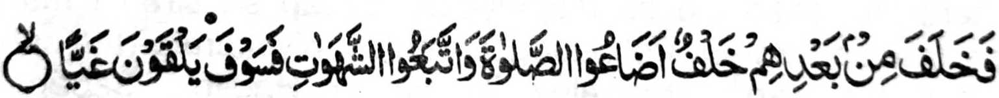

“Na aden a miyakasalono ko oriyan niran a miyakasambi a inilang iran so Sambayang, go piyangonotan niran so manga kabaya iran a ribat, na maolog siran den ko Ghayy (Landeng ko Naraka).” (Surah Maryam: 59)
Si-i ko Qamos (Dictionary) na so Ghayy, na inosay (niyan) sa limpangan, a mitotoro iyan so sangat a siksa ago kabinasa sa Alongan a Maori. Pitharo o saba-ad ko manga pananapsir, a so Ghayy na isa a landeng sa Naraka a pepeno-on na rogo ago dana. So manga tao a bininasa iran so Sambayang iran na pozangen sangka-iya a landeng.